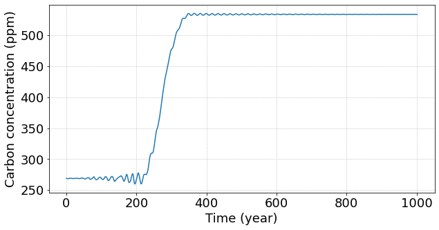
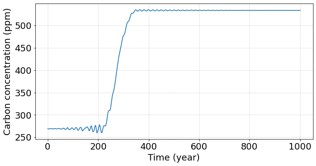

---------------------------------------------------------------------------
KeyboardInterrupt Traceback (most recent call last)
C:\Users\ALIENW~1\AppData\Local\Temp/ipykernel_24480/2739138699.py in <module>
6 # print(j+1)
7
----> 8 fig, ax = plot_simulation(pulsesize, pulseyear,pulsebaseline,pulsecearth, selected_index)
9 plt.tight_layout()
10 plt.show()
~\QuantClimateChange\Module_plot.py in plot_simulation(pulse, year, baseline, cearth, selected_index)
24 fig, axs = plt.subplots(len(selected_index),1, figsize = (3*(len(selected_index)),20), dpi = 200)
25
---> 26 modelsol= model(pulse, year,baseline,cearth)
27
28 for j in selected_index:
~\QuantClimateChange\Module_model.py in model(pulse, year, baseline, cearth)
408 init = [Ts, Cs]
409 t_eval = np.linspace(0, tspan, length)
--> 410 sol = solve_ivp(dydt, t_eval[[0, -1]], init, t_eval=t_eval, method='RK45', max_step=0.1)
411 #sol = solve_ivp(dydt, t_eval[[0, -1]], init, t_eval=t_eval, method='BDF')
412
C:\ProgramData\Anaconda3\lib\site-packages\scipy\integrate\_ivp\ivp.py in solve_ivp(fun, t_span, y0, method, t_eval, dense_output, events, vectorized, args, **options)
574 status = None
575 while status is None:
--> 576 message = solver.step()
577
578 if solver.status == 'finished':
C:\ProgramData\Anaconda3\lib\site-packages\scipy\integrate\_ivp\base.py in step(self)
179 else:
180 t = self.t
--> 181 success, message = self._step_impl()
182
183 if not success:
C:\ProgramData\Anaconda3\lib\site-packages\scipy\integrate\_ivp\rk.py in _step_impl(self)
142 h_abs = np.abs(h)
143
--> 144 y_new, f_new = rk_step(self.fun, t, y, self.f, h, self.A,
145 self.B, self.C, self.K)
146 scale = atol + np.maximum(np.abs(y), np.abs(y_new)) * rtol
C:\ProgramData\Anaconda3\lib\site-packages\scipy\integrate\_ivp\rk.py in rk_step(fun, t, y, f, h, A, B, C, K)
62 for s, (a, c) in enumerate(zip(A[1:], C[1:]), start=1):
63 dy = np.dot(K[:s].T, a[:s]) * h
---> 64 K[s] = fun(t + c * h, y + dy)
65
66 y_new = y + h * np.dot(K[:-1].T, B)
C:\ProgramData\Anaconda3\lib\site-packages\scipy\integrate\_ivp\base.py in fun(t, y)
136 def fun(t, y):
137 self.nfev += 1
--> 138 return self.fun_single(t, y)
139
140 self.fun = fun
C:\ProgramData\Anaconda3\lib\site-packages\scipy\integrate\_ivp\base.py in fun_wrapped(t, y)
18
19 def fun_wrapped(t, y):
---> 20 return np.asarray(fun(t, y), dtype=dtype)
21
22 return fun_wrapped, y0
~\QuantClimateChange\Module_model.py in dydt(t, y)
386
387 dC = V
--> 388 dC += Yam(t) * sa # anthropogenic emissions from Ca spline # volcanism
389 #dC += Ca * sa # added for bif diagrams
390 #dC -= wa * C * vegcover * veggrowth(T) # carbon uptake by vegetation
~\QuantClimateChange\Module_model.py in Yam(t)
162 em_points = Cebis
163
--> 164 tck = interpolate.splrep(t_points, em_points)
165 return interpolate.splev(t,tck)
166
C:\ProgramData\Anaconda3\lib\site-packages\scipy\interpolate\fitpack.py in splrep(x, y, w, xb, xe, k, task, s, t, full_output, per, quiet)
289
290 """
--> 291 res = _impl.splrep(x, y, w, xb, xe, k, task, s, t, full_output, per, quiet)
292 return res
293
C:\ProgramData\Anaconda3\lib\site-packages\scipy\interpolate\_fitpack_impl.py in splrep(x, y, w, xb, xe, k, task, s, t, full_output, per, quiet)
496 " call with task=0,-1") from e
497 if not per:
--> 498 n, c, fp, ier = dfitpack.curfit(task, x, y, w, t, wrk, iwrk,
499 xb, xe, k, s)
500 else:
KeyboardInterrupt:

 
